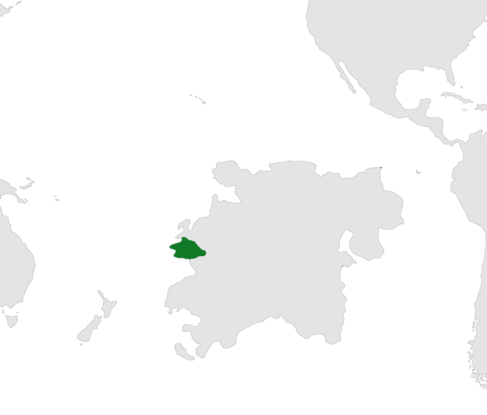
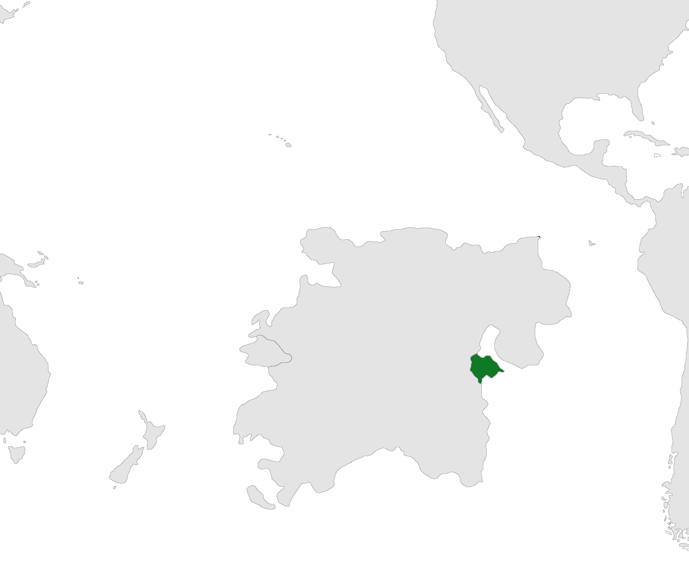
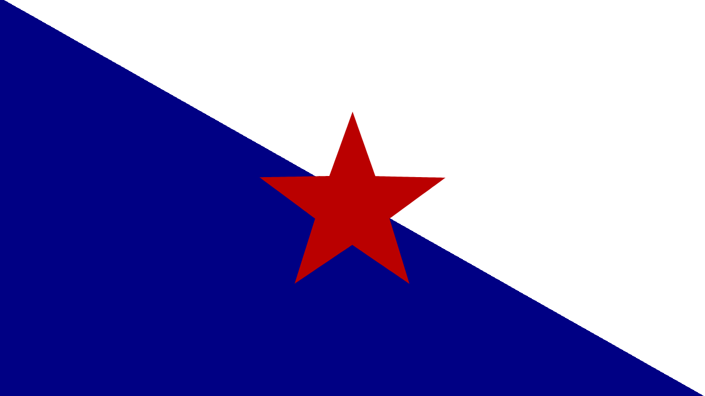
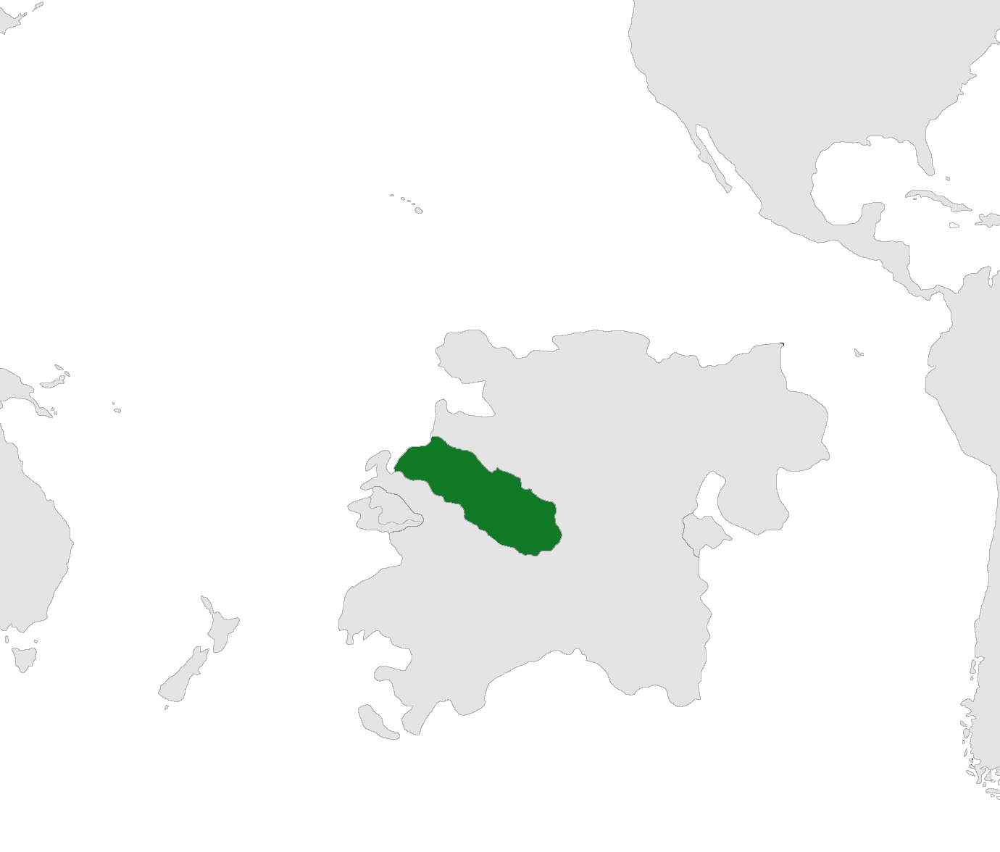

Welcome to WikiHydrant
The official wiki of Fire Hydrant lore.
Articles largely in progress
All articles relating to the National Union of New Merseyside Republics are found here:
- The National Union of New Merseyside Republics -
- Northern Republic - (uf)
Flag and Coat of Arms (uf)
Capital (unknown) (uf)
- Southern Republic - (uf)
Flag and Coat of Arms (uf)
Hydrantville (us)
All articles relating to the Far Andean Republic are found here:
 - Far Andean Republic -
Flag and Coat of Arms (uf)
Puerto O'Higgins, OH
Antofagasta, AN
Pequeña Santiago, PS
Rovequez, AL
Surmaguas, AN
Barralores, AN
San Felix, OH
Highway System (AL) (uf)
Table of Contents
Remember to fix this.
All articles relating to French New Nemoa are found here:
- French New Nemoa - (uf)
Flag and Coat of Arms (uf)
Cap d' agriculture, MR
Ahunui, MR
Raiatea, MR
Huahire, MR
Evreux, MR
Veluire,MO
Moorea, MO
Maiao, MO
Point Venus, TA
Tahiti, TA
Tetiaroa, TA
Villes Dorees, ME
Mehetia, ME
Arraves, ME
Anaa, ME
Faaite, ME
Tanarea, ME
Motutunga, ME
Rochembeau, HI
Rarahere, HI
Saint Medard, HI
Reitoru, HI
Horaiki, HI
Ira, TH
Anuanuraro, TH
Oazarette, TH
Oyonnaux, TH
Nengorengo, TH
Manuhangi, TH
Ahunui, TH
Anuanurunga, TH
Nukutepipi, TH
Boe, HE
Hereheretue, HE
Baroeul, HE
Highway System (FNN) (uf)